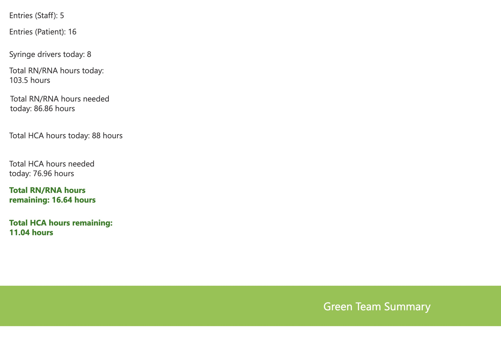

app consists of 3 pages one summary page, a page for nurses to input information on nurses. This is called patient AC entry, another page for nurses to enter the shifts they are doing called staff entry. The app uses figures inputted by nurses in the entry pages to determine figures on the complexity of the patients and the hours required to take care of them.


